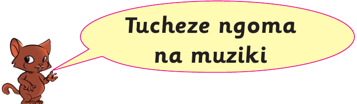
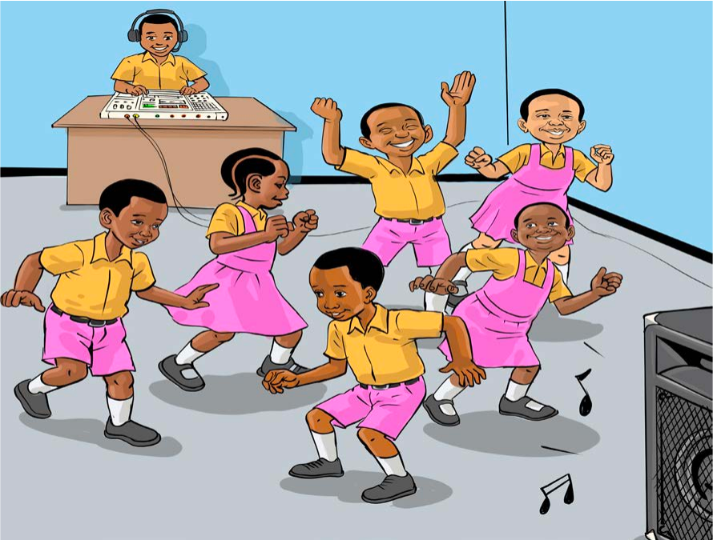

Tucheze ngoma na muziki

Mhusika mdogo amesimama karibu na kiputo kinachowaalika wanafunzi kucheza ngoma na muziki.
Wanafunzi sita wanacheza kwa furaha huku mwanafunzi mwingine akicheza muziki kwa kifaa kilicho mezani.Shughuli ya kufanya 8
Shughuli ya kufanya ya naneCheza muziki unaoupenda.
54